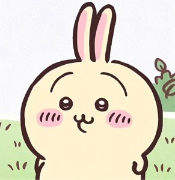

乌萨奇 - 兔子角色的魅力
姓名：乌萨奇
动漫：《吉伊卡哇》（Chiikawa）
特点：乌萨奇是一只外形可爱的兔子，以其无厘头和疯癫的特质赢得了众多粉丝的喜爱。
标志性口号：“咿——呀哈——”
动漫简介
《吉伊卡哇》是一部由Nagano创作的漫画，讲述吉伊、哈奇和乌萨奇这三个角色的趣味生活。该作品在社交平台上广受好评，并于2022年改编成动画《小可爱》（ちいかわ）。
乌萨奇的粉丝评价
乌萨奇在《吉伊卡哇》中的表现使他成为了一个极具人气的角色。他的每一次出场都能给观众带来欢乐和惊喜，是日本本土及其动漫粉丝中的宠儿。